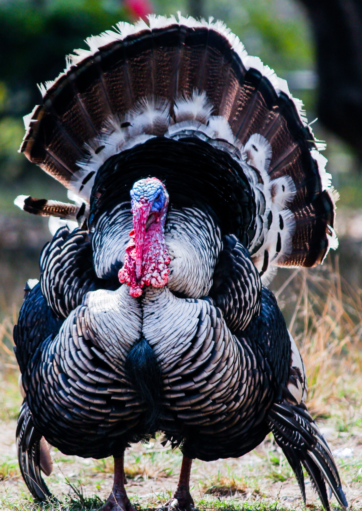

Odin Recipes
Thanksgiving Dinner

This fucking turkey
it's a good and delicious fucking turkey.
I do love the taste of freshly murdered turkey.
So good.
ingredients
- pellets
- donkey poop
- your grandmas glass eye
- sweaty armpit deoderant clumps
- snake plant leaflet
cooking instructions
- Shoot the turkey with the pellets
- Use the donkey poop to hide the smell of the body
- Next preheat the oven to 500 degrees, if grandmas glass eye explodes it is of temp
- Insert turkey into oven and wait til you have sweaty armpits that your deoderant clumps fall down the side of your body
- Remove turkey from oven after your snake plant leaflets tell you too
- next time dont eat the mushrooms until after you finish the cooking